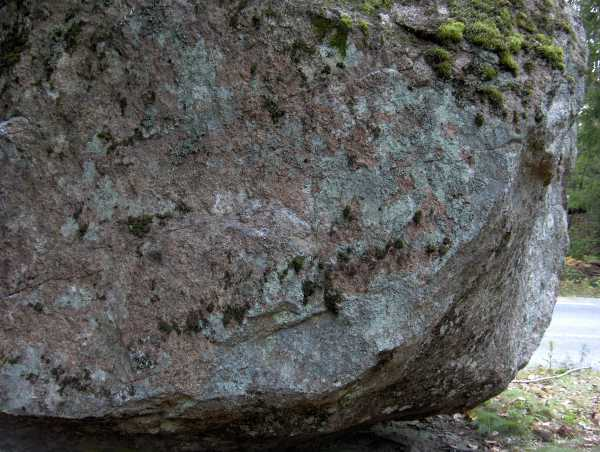

Runt fint överhängande block.
Hitta hit:
Går inte att missa, ligger på östra sidan av väg 509, precis intill vägkanten.
Latitud: N 59º 06.556'
Longitud: E 017º 28.687'
1. ??? Ogjord, start under taket, catch till läppen.
2. 6B+ Påskägg, Sittstart, vänster på bra list, höger på pinch kanten.
3. 7A+ Kaviar, Sittstart, bägge händerna på pinchen
4. 6C+ Äggtoddy, Sittstart på slopern, catcha till listen till höger.
5. ??? Ogjord, liggstart. Pocket med vänster och pinch kanten längs ner för vänster.
6. 6A+ Omelätt, Liggstart, rakt upp i diedern.
Nedan syns, 1an, sittstart under taket.
Här syns starten på 2an och 3an.
4an:
5an och 6an
Updaterad:
20060917 initialt
20060924 förare.
Copyright (C) Permission is granted to copy, distribute and/or modify this document under the terms of the GNU Free Documentation License, Version 1.3